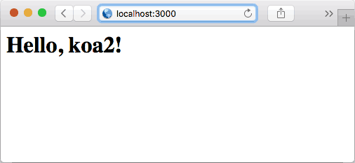

koa入门
创建koa2工程
首先，我们创建一个目录hello-koa并作为工程目录用VS Code打开。然后，我们创建app.js，输入以下代码：
// 导入koa，和koa 1.x不同，在koa2中，我们导入的是一个class，因此用大写的Koa表示:
const Koa = require('koa');
// 创建一个Koa对象表示web app本身:
const app = new Koa();
// 对于任何请求，app将调用该异步函数处理请求：
app.use(async (ctx, next) => {
await next();
ctx.response.type = 'text/html';
ctx.response.body = '<h1>Hello, koa2!</h1>';
});
// 在端口3000监听:
app.listen(3000);
console.log('app started at port 3000...');
对于每一个http请求，koa将调用我们传入的异步函数来处理：
async (ctx, next) => {
await next();
// 设置response的Content-Type:
ctx.response.type = 'text/html';
// 设置response的内容:
ctx.response.body = '<h1>Hello, koa2!</h1>';
}
其中，参数ctx是由koa传入的封装了request和response的变量，我们可以通过它访问request和response，next是koa传入的将要处理的下一个异步函数。
上面的异步函数中，我们首先用await next();处理下一个异步函数，然后，设置response的Content-Type和内容。
由async标记的函数称为异步函数，在异步函数中，可以用await调用另一个异步函数，这两个关键字将在ES7中引入。
现在我们遇到第一个问题：koa这个包怎么装，app.js才能正常导入它？
方法一：可以用npm命令直接安装koa。先打开命令提示符，务必把当前目录切换到hello-koa这个目录，然后执行命令：
C:\...\hello-koa> npm install koa@2.0.0
npm会把koa2以及koa2依赖的所有包全部安装到当前目录的node_modules目录下。
方法二：在hello-koa这个目录下创建一个package.json，这个文件描述了我们的hello-koa工程会用到哪些包。完整的文件内容如下：
{
"name": "hello-koa2",
"version": "1.0.0",
"description": "Hello Koa 2 example with async",
"main": "start.js",
"scripts": {
"start": "node start.js"
},
"keywords": [
"koa",
"async"
],
"author": "Michael Liao",
"license": "Apache-2.0",
"repository": {
"type": "git",
"url": "https://github.com/michaelliao/learn-javascript.git"
},
"dependencies": {
"babel-core": "6.13.2",
"babel-polyfill": "6.13.0",
"babel-preset-es2015-node6": "0.3.0",
"babel-preset-stage-3": "6.5.0",
"koa": "2.0.0"
}
}
其中，dependencies描述了我们的工程依赖的包以及版本号。其他字段均用来描述项目信息，可任意填写。
然后，我们在hello-koa目录下执行npm install就可以把所需包以及依赖包一次性全部装好：
C:\...\hello-koa> npm install
很显然，第二个方法更靠谱，因为我们只要在package.json正确设置了依赖，npm就会把所有用到的包都装好。
注意，任何时候都可以直接删除整个node_modules目录，因为用npm install命令可以完整地重新下载所有依赖。并且，这个目录不应该被放入版本控制中。
现在，我们的工程结构如下：
hello-koa/
|
+- .vscode/
| |
| +- launch.json <-- VSCode 配置文件
|
+- app.js <-- 使用koa的js
|
+- package.json <-- 项目描述文件
|
+- node_modules/ <-- npm安装的所有依赖包
现在，尝试在VS Code或者直接用命令行运行app.js，不出意料的话，Node会报错：
app.use(async (ctx, next) => {
^
SyntaxError: Unexpected token (
at ...
这是因为Node.js只支持ES6，并不支持ES7，无法识别新的async语法。
要让Node.js运行ES7代码，需要把ES7代码“转换”为ES6代码，这样，Node.js就可以运行转换后的代码。这个转换工作可以用Babel实现。
Babel
Babel是一个JavaScript编写的转码器，它可以把高版本的JavaScript代码转换成低版本的JavaScript代码，并保持逻辑不变，这样就可以在低版本的JavaScript环境下运行。
例如，我们用ES7编写的JavaScript代码，用Babel转换成ES6以后，就可以在Node环境下执行。如果某些JavaScript代码需要在更低版本的环境下执行，例如IE 6，就可以用Babel转换成ES5的代码。
用Babel转码时，需要指定presets和plugins。presets是规则，我们stage-3规则，stage-3规则是ES7的stage 0~3的第3阶段规则。
plugins可以指定插件来定制转码过程，一个preset就包含了一组指定的plugin。
为了让async语法能正常执行，我们只需要指定ES7的stage-3规则。
Babel提供了一个在线转码工具，可以实时预览转码后的代码。
现在第二个问题来了：怎么用Babel转码，然后让app.js能正常执行？
方法一：通过Babel提供的命令行，可以把app.js转换为类似es6-app.js，然后执行这个新的JavaScript代码。
这个方法显然比较麻烦，而且我们会经常改动app.js，这会导致我们每次改动后都要输入命令，所以这个方法不实用。
方法二：每次启动app.js前自动让Babel转码，这样我们就不需要手动做这件事情了。
怎么自动让Babel转码？有个简单的方法。我们编写一个start.js文件，在这个文件中，先加载babel-core/register，再加载app.js：
var register = require('babel-core/register');
register({
presets: ['stage-3']
});
require('./app.js');
现在我们在hello-koa目录下又多了一个start.js文件。
紧接着，我们在package.json中添加依赖包：
"dependencies": {
"babel-core": "6.13.2",
"babel-polyfill": "6.13.0",
"babel-preset-es2015-node6": "0.3.0",
"babel-preset-stage-3": "6.5.0",
"koa": "2.0.0"
}
然后使用npm install命令安装后，在VS Code中执行start.js，调试控制台输出如下：
node --debug-brk=40645 --nolazy start.js
Debugger listening on port 40645
app started at port 3000...
我们打开浏览器，输入http://localhost:3000，即可看到效果：

为什么先加载babel-core/register，再加载app.js，魔法就会生效？原因是第一个require()是Node正常加载babel-core/register的过程，然后，Babel会用自己的require()替换掉Node的require()（还记得我们用自定义的函数替换了浏览器的alert函数吗？），随后用require()加载的所有代码均会被Babel自动转码后再加载。
现在，我们的工程多了一个start.js：
hello-koa/
|
+- .vscode/
| |
| +- launch.json <-- VSCode 配置文件
|
+- app.js <-- 使用koa的js
|
+- start.js <-- 启动入口js
|
+- package.json <-- 项目描述文件
|
+- node_modules/ <-- npm安装的所有依赖包
还可以直接用命令node start.js在命令行启动程序，或者用npm start启动。npm start命令会让npm执行定义在package.json文件中的start对应命令：
"scripts": {
"start": "node start.js"
}
koa middleware
让我们再仔细看看koa的执行逻辑。核心代码是：
app.use(async (ctx, next) => {
await next();
ctx.response.type = 'text/html';
ctx.response.body = '<h1>Hello, koa2!</h1>';
});
每收到一个http请求，koa就会调用通过app.use()注册的async函数，并传入ctx和next参数。
我们可以对ctx操作，并设置返回内容。但是为什么要调用await next()？
原因是koa把很多async函数组成一个处理链，每个async函数都可以做一些自己的事情，然后用await next()来调用下一个async函数。我们把每个async函数称为middleware，这些middleware可以组合起来，完成很多有用的功能。
例如，可以用以下3个middleware组成处理链，依次打印日志，记录处理时间，输出HTML：
app.use(async (ctx, next) => {
console.log(`${ctx.request.method} ${ctx.request.url}`); // 打印URL
await next(); // 调用下一个middleware
});
app.use(async (ctx, next) => {
const start = new Date().getTime(); // 当前时间
await next(); // 调用下一个middleware
const ms = new Date().getTime() - start; // 耗费时间
console.log(`Time: ${ms}ms`); // 打印耗费时间
});
app.use(async (ctx, next) => {
await next();
ctx.response.type = 'text/html';
ctx.response.body = '<h1>Hello, koa2!</h1>';
});
middleware的顺序很重要，也就是调用app.use()的顺序决定了middleware的顺序。
此外，如果一个middleware没有调用await next()，会怎么办？答案是后续的middleware将不再执行了。这种情况也很常见，例如，一个检测用户权限的middleware可以决定是否继续处理请求，还是直接返回403错误：
app.use(async (ctx, next) => {
if (await checkUserPermission(ctx)) {
await next();
} else {
ctx.response.status = 403;
}
});
理解了middleware，我们就已经会用koa了！
最后注意ctx对象有一些简写的方法，例如ctx.url相当于ctx.request.url，ctx.type相当于ctx.response.type。